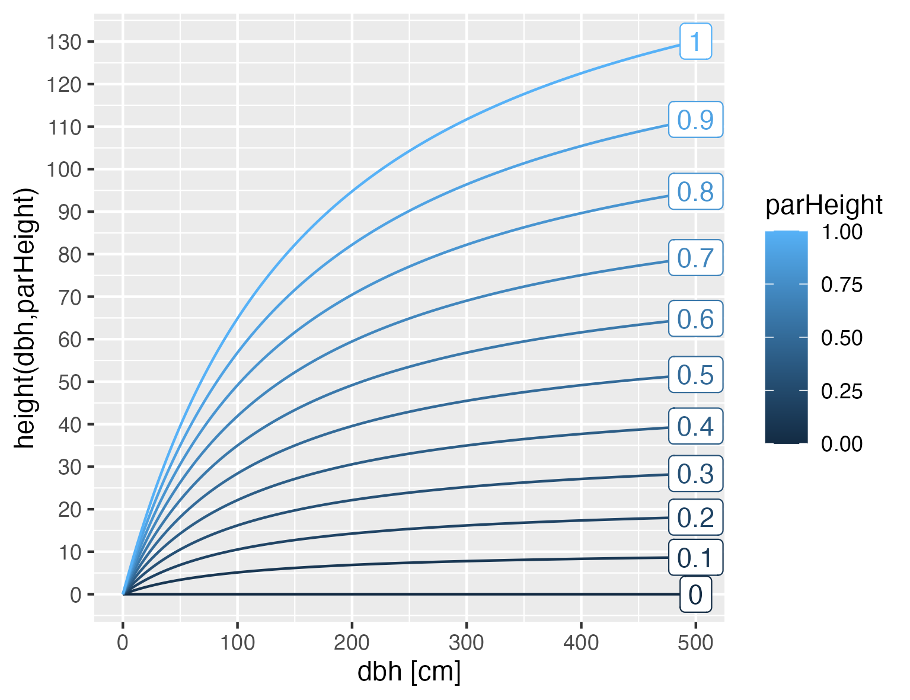

Calculate the height of a tree based on its diameter at breast height and an allometry parameter.
Source:R/Processes.R
height.RdCalculate the height of a tree based on its diameter at breast height and an allometry parameter.
Details
This function calculates the height of a tree based on the diameter at breast height (dbh) and a parameter parHeight.
The height is calculated using the formula: $$height = \left( \exp \left( \frac{(\text{dbh} \times \text{parHeight})}{(\text{dbh} + 100)} \right) - 1 \right) \times 100 + 0.001$$ where dbh is the diameter at breast height of the tree in cm and parHeight is an allometric species specific parameter.
All parameters of parHeight from 0 to 1 result in physiologicaly plausible heights. The range from 0.3 to 0.9 results in realistic tree heights. Values of parHeight close to 1 are physiologically almost impossible, below 0.3 is suitable for small tree species and shrubs.
